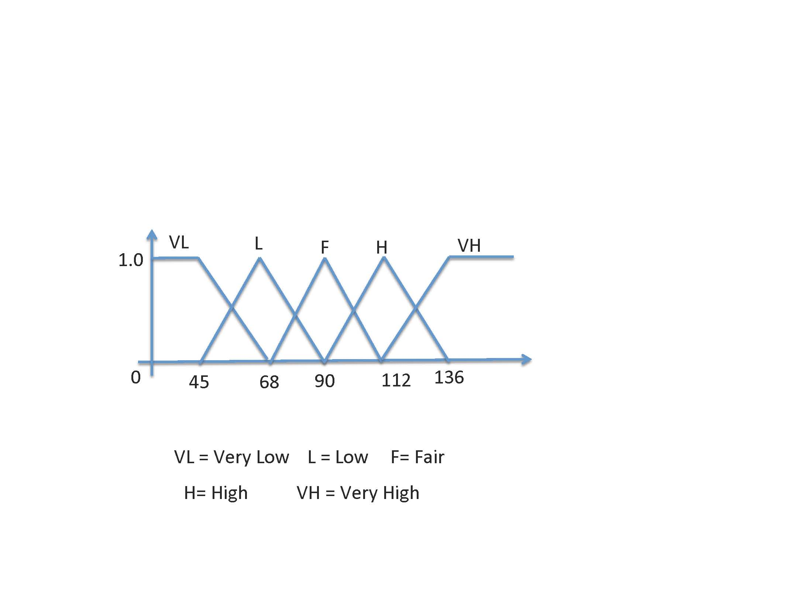

The FuzzyDL-Learner System (see also latest changes)
The Project started in collaboration with Francesca A. Lisi.
FuzzyDL-Learner is an automatic learning system for OLW 2 ontologies.
| Confidence | Axiom |
| 1,000 | Hostel subclass of Good_Hotel |
| 1,000 | hasPrice_veryhigh subclass of Good_Hotel |
| 0,569 | hasPrice_high subclass of Good_Hotel |
| 0,286 | hasAmenity some (24h_Reception) and hasAmenity some (Disabled_Facilities) and hasPrice_low subclass of Good_Hotel |
| 0,282 | hasAmenity some (Babysitting) and hasRank some (Rank) and hasPrice_fair subclass of Good_Hotel |
| 0,200 | Hotel_1_Star subclass of Good_Hotel |
Here, the range of the real valued price attribute has been automatically fuzzyfied as illustrated below.

See the here for a list of ontologies on which FOIL-DL has been tested.
So far, the system supports the following algorithms
- FOIL-DL
- Inspired by the well-known FOIL algorithm
- pFOIL-DL
- Like FOIL-DL, though a novel ensemble learning measure has been incorporated (see here)
- AdaBoost-DL
- Based on Real AdaBoost, where a genetic algorith has been used to generate GCI candidates
In preparation:
- gFOIL-DL
- Like FOIL-DL, though a genetic algorith has been used to generate GCI candidates
- gpFOIL-DL
- Like gFOIL-DL, but ensemble learning measure of pFOIL-DL has been used instead